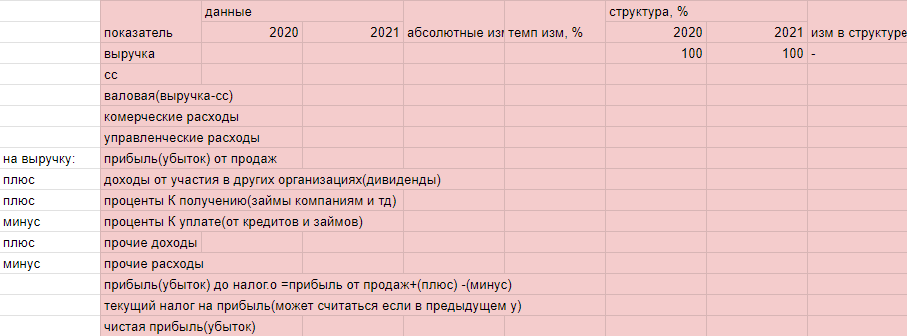
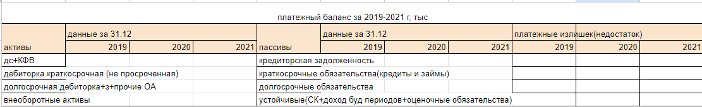
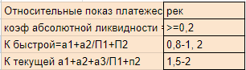

Предпосылки возникновения управленческого учета
Концепция капитала
Рост производственных затрат
Обострение внутренней и внешней конкуренции
Появление новых методов анализа и планирования на основе ЭММ
Рост инфляции
Расширение сфер деятельности предприятия
Научно-технический прогресс
Дифференциация рынков, товаров, потребителей
Выделение новых требований в управлении организации
1 Этап конец 19 века начало 40-ч гг. 20 века промышленно-аналитический учет
2 Этап середина 40-х начало 60-х - управленческий учет
3 Этап середина 60-х начало 80-х - маржинальный учет
4 Этап современный стратегический управленческий учет
В России:
1 Этап средние века учет монастырями, акцент на сохранность денежных средств.
2 Этап вторая половина 17 века становление производственного учета в промышленности и строительстве.
3 Этап 1682-1725 гг. Реформы Петра 1: развитие производственного учета, появление позаконного метода учета затрат.
4 Этап вторая половина 18 века - первая половина 19 века постреформный период
5 Этап 19в - 1917.
6 Этап 1918 - 1923 Период военного коммунизма. Поиск нового всеобщего (недежного) измерителя
7 Этап 1923 - 1929 НЭП Развитие наиболее эффективных форм хозяйствования.
8 Этап 1930 - 1953 Сталинский период совершенствование нормативного учета
9 Этап 1953 - 1970 Советский период: совершенствование нормативного учета
10 Этап 1984 - начало 90-х совершенствование производственного учета
11 Этап 90-х и по настоящее время. Внедрение управленческого учета
Значение управленческого учета для эффективного управления организацией - предоставление информации для:
1. ценообразование
2. исчисление себестоимости
3. планирование - бюджетирвание, анализа и контроля
4. для принятия управленческих решений
Управленческий учет решает задачи:
1 Информационная поддержка в определении стратегии развития организации, формулировке целей и выработке путей их достижения
2 Определение основных целевых показателей в соответствии с тактическими и стратегическими целями
3 Оценка эффективности деятельности организации в целом
4 Разработка системы учета и управления затратами
5 Установление системы взаимоотношений между структурными подразделениями
Затраты как объект управленческого учета: понятие и классификация
Затраты - это потребленные ресурсы или деньги, которые нужно заплатить за товары, работы, услуги
Классификация затрат:
1. Для исчесления себестоимости и полученной прибыли
2. Для принятия управленческих решений
3. Для планирования и контроля
Признак классификации:
По экономическому содержанию
Его виды затрат:
Элементы затрат:
1. Материальные затраты
2. Трудовые затраты
3. Отчисления в фонды
4. Амортизация
5. Прочие
по ПБУ 10/99 и НК РФ (гл 25 в том числе)
Статьи затрат - кол-во субъективно
Шаблон - 1970 года
1. Сырье и материалы.
2. Возвратные отходы.
3. Топливо и энергия.
4. Основная зарплата + премия.
5. Дополнительная зарплата/ за неотработанные часы в соответствии с законом + отпуска.
6. Отчисления на соц.нужны (страхования Мед.страх, Соц.страх, Пенс.фонд).
7. Расходы на подготовку и освоение производства.
8. Расходы на содержание и эксплотацию продукта.
9. Цеховые расходы.
10. Общезаводские расходы. (ЗП директора)
11. Потери от брака. (затраты на исправления если возможно, если невозможно исправить предъявляем суммы к возмещению)
12. Прочие производственные расходы.=Производственная сибестоимость+Внепроизводственные расходы (продажа, реклама и тд.)=Полная сибестоимость
По отношению к технологическому процессу
Его виды:
Основные (относится непосредственно к производству, материалы, зарплата рабочих и тд.)
Накладные (относится к обслуживанию и управлению производства, зп фин.директора и тд.)
По способу отнесения на себестоимость продукции
Виды:
Прямые (относятся к четкому одному продукту)
Косвенные
По составу
Виды:
Одноэлементные
Комплексные
По учатию в производственном процессе
Виды:
Производственные
Непроизводственные (реклама + продажа)
По переодичности возникновения
Виды:
Текущие (каждый месяц и тп.)
Единовременные
По способности приносить экономические выгоды
Виды:
Входящие (ещё могут принести выгоду)
Истекшие
По отношению к объему производства (продаж)
Постоянные (не зависит от выпуска продукции)
Переменные
По возможности учета при принятии решений
Релевантные (имеют вес при принятии управленческих решений)
Нерелевантные
По отношению к альтернативным управленческим решениям
Дифференциальные
Маржинальные (затраты на одну дополнительную единицу партии)
По возможности контроля и степени регулируемости
Контроллируемые
Неконтроллируемые
По возможности получения экономического эффекта
Производительные (эффективные)
Непроизводительные (приводят к браку, потерям и тп.)
ПРОИЗВОДСТВЕННЫЕ МОЩНОСТИ
П.Мощность - максимальный выпуск продукции при данной реально существующей величине производственных ресурсов
Способы выражения производственной мощности:
1. Общая величина человеко-часов.
2. Общая величина машино-часов.
3. Количество единиц продукции.
Виды производственных мощностей:
1. Теоретическая
2. Практическая
3. Нормальная
Прак.Мощность = Теор.Мощность - нормальные рабочие простои
Нормальная мощность - тот объем, которое компания скорее всего произведет
Методы калькулирования (можно сочетать)
Котловой - ведет учет затрат без какой-либо аналитики
Всё списывается на один счет к примеру 20
Его используют компании, которые не используют учет для формирования себистоимости
например: малые предприятия, монопроизводства
Недостаток: нет возможности идентифицировать затраты по конкретному продукту
Простой - попроцессный
Краткий технологический цикл из-за чего отсутствует незавершенное производство
Чаще всего добывающие отрасли промышленности, энергетика, поточное производство
С.с = сб.стоимость за определенный период / кол-во изделий
Схема попроцессного калькулирования - смотреть фото
Отличительные черты попроцессного метода:
1. Не предпринимается попыток разделить затраты на отдельные единицы продукции
2. Все прямые и косвенные затраты учитывают по статьям калькулирования на весь выпуск продукции а затем распределяют по процессам
3. Определяется средняя себестоимость единицы продукции
4. Объект учета затрат обычно совпадает с объектом калькулирования
5. Производственный цикл разбит на стадии
Позаказный метод
Уникальная редко повторяющаяся продукция - сфера услуг, оказание работ
Пока не сделан заказ - затраты будут числятся как незавершенное производство
Вся документация ведется с шифром/нумерацией заказа
Сфера работ (машиностроение, кораблестроение)
Сфера услуг (ремонт, строительство)
Отличительные черты производства:
1. несхожая продукция
2. технологический процесс между цехами тесно связан
3. единая единица учета затрат и калькулирования (заказ, считается себестоимость заказа)
4. наличие незавершенного производства
Сб.с изд = затраты по заказу / кол-во изделий
Отличительные черты позаказного метода:
1. прямые и косвенные затраты распределяют на отдельные единицы продукции
2. пока заказ не выполнен затраты учитываются в незавершенное производство
3. затраты накапливаются по каждому заказу, а не за период времени
4. Аналитический учет по счету 20 (осн.производство) ведется в разрезе заказов.
Попередельный метод
Сфера применения: отрасли промышленности с серийным поточным производством комплексного использования сырья и длительным периодом изготовки.
(рыбопереработка, ткацкая промышленность, производство кирпича)
Единственный метод учет где объект учета не совпадает с объектом калькулирования
Отличительные черты производства:
1. сырье, полуфабрикаты проходят в определенной последовательности через все этапы производства, называемые переделами
2. на выходе из последнего передела получают готовый продукт
3. наличие незавершенного производства
Объекты учета затрат - переделы
Объект калькулирования - меняются в зависимости от передела, что вышло из передела
Отличительные черты передельнего метода:
1.ОБЪЕКТ УЧЕТА НЕ СОВПАДАЕТ С ОБЪЕКТОМ КАЛЬКУЛИРОВАНИЯ
2.Затраты гакапливаются по каждому переделу за определенный период
3.Аналитический учет по счету 20 ведется в разрезе переделов
Способ исчисления себестоимости выпущенной продукции и незавершенного производства:
1.ФИФО
2.средневзвешанной
Средневзвешанной - налог на прибыль меньше
ФИФО - фин.результат выше, с/б с меньше, лучше отражает имущество
Переводят как (варианты)
- система учета прямых затрат
- учет маржинальных затрат
- учет ограниченной или сокращенной себестоимости, учет переменных затрат
Учетные аспекты системы директ костинг
1. Метод учета затрат на производство и калькулирование себестоимости продукции
2. Самостоятельная учетная система, основанная на разделении затрат в зависимости от объема продаж
При расчете с/б с все расходы кроме внепроизводственных должны попасть в неё
с/б с = Сумма всех прямых затрат
с/б с = Сумма прямых переменных + сумма косвенных переменных затраты
с/б с = Сумма прямых переменных затрат + сумма косвенных переменных затрат + сумма косвенных постоянных затрат(только ту часть, которая связана с произв.мощностями)
с/б с = Сумма производственных затрат
Система директ-костинг предполагает деление затрат на постоянные и переменные
Преимущества и проблемы применения директ-костинга
МОДЕЛЬ ПРИНЯТИЯ УПРАВЛЕНЧЕСКИХ РЕШЕНИЙ
Параметры - мы не можем повлиять, а на предприятие влияет
Переменные - мы можем повлиять
Факторы, влияющие на процесс принятия решений
Колличественные - параметры оцениваемые колличественно
Качественные - рейтинги к примеру, тяжело оцениваемые колличественно
Порядок:
Определение целей и задач
Поиск альтернативных вариантов
Сбор данных об альтернативных вариантов
Выбор оптимального варианта
Осуществление принятых решений
Сравниваем фактических и запланированных рез-ов
Принятие мер по устранению отклонений от плана
В управлении применяется релевантный подход:
Релевантные - актуальные - которые влияют на принятие решений информацию
Расчеты
1. берем общее отклонение 10 000 умножаем на коэф.распределения * 0,1111 = сумма отклонения 1111
2. считаем факт.сб/с по продукту А 10 000+1111
3. считаем сб/с единицы по продукту А 11111/20 = 555,6
Вп и ПП обычная деятельность(операционных)
Вп=в-сс
Пп=вп-кр-ур
Прочая деятельность
Пп+ду+пкп-пку+пд-пр=прибыль до но
Прибыль до но-нп=чистая прибыль
Чистая-дивиденды-расп=нераспределенка
Доходы от участия
Проценты к получению/уплате
Прочие
Актив:
У розницы нет дебиторки, может не быть основных средств
У консалтинга почти нет основных средств, практически нет запасов, есть дебиторка, если есть деньги-фин вложения
Пассив:
Промышленность - существенный собственный капитал(преобладает)3 раздел >4,5; заемные(НЕ краткосрочные кредиты, тк не успевают отбить)
Розница и консалтинг - минимальный собственный капитал(не требуются большие аложения), заемные(краткосрочные)
Анализ:
1. знакомство с компанией через отчетность - валюта баланса(последняя строчка)
2. поиск и проверка больных статей баланса(убытки(3 раздел пассива)-значение в скобках, дебиторская задолжность(должна быть не просроченная, иначе рассинхрон налоговых платежей, см в пояснениях и расшифровке), фин вложения (=деньги, условно) смотреть чем представлены)
3. переходим к горизонтальном(анализ динамики в одних и тех же строках за разные промежутки времени:от отчетного к предыдущему(абсолютные показатели);
относительные показатели: темпы изменения= отчетный год/предшествующий год*100%(больше доверия)
и вертикальном анализу(структуры): удельный вес(%) доля внеобороных и оборотных активов (итог раздела/валюта баланса),
структура статей - удельный вес статьи=статья/валюта баланса или =статья/итог раздела(видим что преобладает в разделе), можно проверить - сумма удельных весов 100%)
Аналитические таблицы:
Анализ динамики и анализ структуры(можно соединить)
Ликвидность свойство активов
по уменьшению ликвидности:
Абсолютная ликвидность - только деньги!
Дебиторка
Запасы
Ликвидность нужна для оценки платежеспособности
Фин устойчивость - независимость(от внешних источников финансирования) пассив
Ск - высокая финансоыая устойчивость(90%), они сами финансируют свою деятельность
Заёмные - долгосрочные для длительных проектов, краткосрочные (кредиторка и кредиты и займы) - текущая деятельность
1 абсолютные показатели(не устраняют влияние инфл процессов)
СОС=СК-ВнА(ВнА-длительное использование) , если отриц - живёт за счёт заёмных, тк нет собственных средств; если +, то абсолютная фин устойчивость
//СК- ВнА+ОА(ОА-собственнце средства для финансирования)
"-"
СОС+до= "+" Нормальная фин устойчивость;
"-" СОС+до+ко="+" Предкризисное(возникают сложности)
"-" Сос+дон+кон+просроч обязательства до и ко - Кризис
Предкризисное фс могут отказать в кредите и тогда не можем нормально работать в текущей деятельности, не можем содержать активы
2 относительные
1. К Автономии(независимости) = (СК) /Валюта (какова доля собственных источников в общей) >50%
Высокая фу не всегда об эффективности
Чем больше, тем более осторожная политика финансирования
2. К зависимости(концентрации заёмного капитала) = 4+5 разделы/ВБ меньше 50%
>50% увеличение финансового риска
3. К соотношения зк и СК =за/СК меньше 1
4. К обеспеченности сос запасов и затрат(фин устойчивость) = (сос):(з+з) >=1(нормальная), меньше 1(0, 6-0, 9) - предкризисная, меньше 0,6 - кризис
5. К обеспеченности ОбА СОС =сос/ОбА >1
6. К маневренности СК = сос/СК какая часть капитала финансируется текущая деятельнлсть ~50%
В них нет смысла если нет СОС
Фин результаты:
Обычная деятельность выручка-п от продаж
Если темпы изм выручки>сс, то генерируется доп прибыль. Если сс меньше выручки, прибыль снижается или убыток
П от продаж - главный показатель, на этом зарабатываем

Относительные показатели -
Рентабельность(%):
1. -Продаж = прибыль от продаж:выручка (сколько копее прибыли с каждого рубля выручки)
-затрат = прибыль от продаж:затраты(сс+ком расходы+упр расходы) (сколько копее прибыли с каждого рубля выручки)
2. Активов = чиста прибыль:активы(валюта баланса) (сколько копее прибыли с каждого рубля средств компании)
3. СК = чистая прибыль:СК (сколько копее прибыли с каждого рубля СК)
Вертикальный анализ
Позволяет увидеть ключевые блоки, которые занимают большую или меньшую долю
Платежный баланс:
Требования для таблиц
Название отражает содержание, временной период, определена единица измерения
Меньше 5% не важно
Ликвидных могут быть конкретные активы компании
Активы по мере убывания
Проверять краткосрочные фин вложенич
Пассивы по мере убывания срочносьи погашения
Ликвид если:
А1>=П1-краткоср платежеспособность
А2>=П2 - краткосрочные платежеспособность
А3>=П3 - долгосроч
А4 меньше П4 - долгосроч
Относительные показ платежеспособности
1 коэф абсолютной ликвидности = а1/п1+п2
К быстрой=а1+а2/П1+П2
К текущей а1+а2+а3: П1+п2
